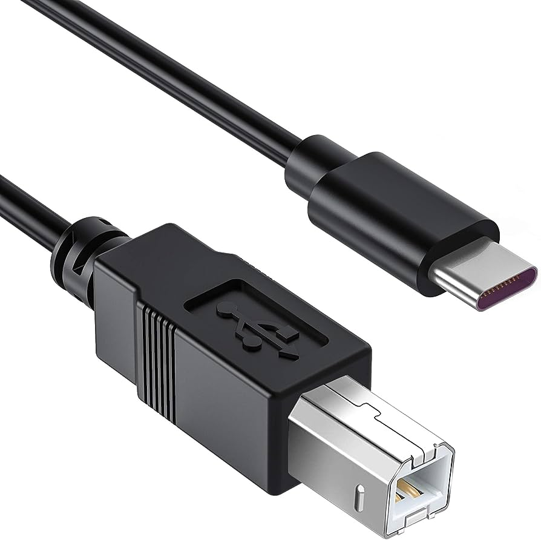

De Fysieke Laag
Processor
De processor, ook wel bekend als de CPU (Central Processing Unit), bestaat uit twee belangrijke componenten: de ALU (Arithmetic Logic Unit) en de Control Unit. De ALU voert rekenkundige en logische bewerkingen uit, terwijl de Control Unit het sequentieel beheer van instructies coördineert.
Taken van de Processor
De processor heeft verschillende taken, waaronder het uitvoeren van instructies van het besturingssysteem en applicaties, het verwerken van gegevens en het beheersen van de werking van andere hardwarecomponenten.
Werkgeheugen (RAM/ROM)
Het werkgeheugen, dat kan bestaan uit RAM (Random Access Memory) en ROM (Read-Only Memory), wordt gebruikt om tijdelijk gegevens en instructies op te slaan die door de processor worden verwerkt. RAM is vluchtig en wordt gewist bij uitschakeling, terwijl ROM permanente instructies bevat.
Bus
De bus is een set van fysieke verbindingen op het moederbord die gegevens en signalen tussen verschillende componenten van de computer overbrengen, zoals de processor, het geheugen en de opslagapparaten.
Deze link is wit>Von Neumannarchitectuur
De Von Neumannarchitectuur is een concept dat het ontwerp van moderne computers beschrijft, waarbij programma's en gegevens in hetzelfde geheugen worden opgeslagen en de processor sequentieel instructies uitvoert.
Moederbord

Het moederbord is het hoofdprintplaat van de computer waarop de processor, het geheugen, de bus en andere belangrijke componenten zijn gemonteerd. Het fungeert als een centraal communicatiepunt tussen hardwarecomponenten.
System-on-a-chip

Een System-on-a-Chip (SoC) is een geïntegreerde chip die alle belangrijke componenten van een computer of mobiel apparaat, zoals CPU, GPU, geheugen en connectiviteit, op één enkele chip combineert.
Permanent geheugen/opslagmedia

Permanent geheugen, zoals harde schijven (HDD) en solid-state drives (SSD), wordt gebruikt om gegevens op te slaan die behouden blijven, zelfs wanneer de computer is uitgeschakeld.
Randapparatuur
Randapparatuur omvat alle extra apparaten die met de computer worden verbonden, zoals toetsenborden, muizen, printers en beeldschermen.
Verbindingen: kabels/interfaces
Kabels en interfaces zijn de fysieke verbindingen die worden gebruikt om apparaten en componenten met elkaar te verbinden, zoals USB-kabels, HDMI-interfaces en ethernetkabels.